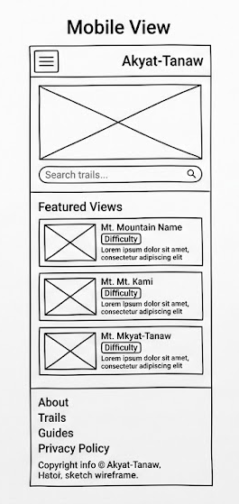
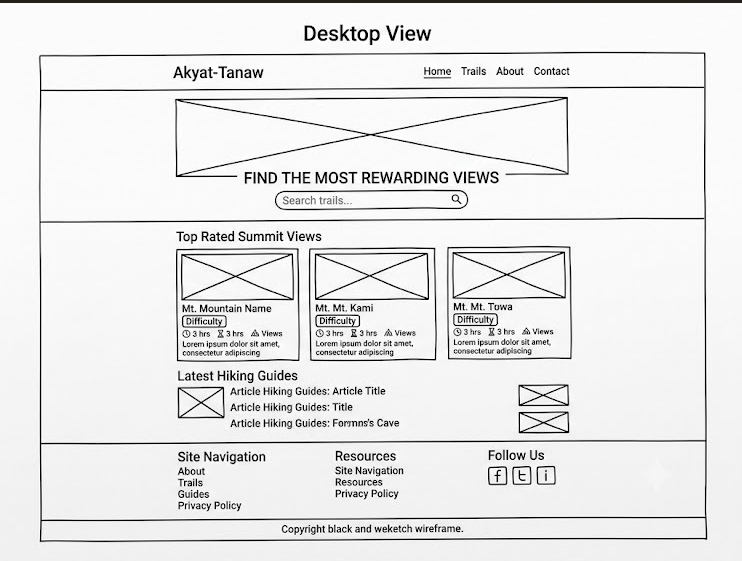

1. Site Name
Name: Akyat-Tanaw (Climb & View)
Reason: Akyat-Tanaw combines two active Tagalog words (Akyat = climb, Tanaw = view) to instantly tell local hikers what to expect: a rewarding ascent leading to scenic mountain views, lookouts, or summit decks.
Optional Domain: akyat-tanaw.ph
2. Site Purpose
The purpose of Akyat-Tanaw is to provide local hikers and outdoor enthusiasts with quick, reliable, and visually rich guides for scenic day hikes across the Philippines. The site offers essential trail profiles, including difficulty ratings, estimated hiking times, peak view highlights, basic commuting directions, and safety tips to help visitors plan successful day trips.
3. Scenarios
- Scenario 1: "I'm a beginner looking for an easy day hike near Metro Manila that has a great sea-of-clouds view. Where can I find a trail that matches my fitness level?"
- Scenario 2: "How do I commute to the jump-off point for Mount Batulao, and how much are the guide fees?"
- Scenario 3: "What is the difference between a backtrail and a traverse hike on this specific mountain?"
4. Color Scheme
The site plan and future website will exclusively use the following color palette:
Forest Green: Headers, primary nav, main action buttons.
Warm Amber: Accent elements, hover states, badges.
Off-White: Body background for clean readability.
Charcoal: Body text for high contrast accessibility.
5. Typography
- Primary Heading Font: Montserrat — Used for main title tags
(
<h1>,<h2>,<h3>) and navigation items. - Body Font: Open Sans — Used for standard paragraphs, trail details, lists, and forms.
6. Wireframes
Black-and-white layout sketches for mobile and desktop viewports demonstrating the home page structure:
Small Viewport (Mobile)
Single-column stacked layout with collapsible burger menu, search banner, and vertical cards.

Large Viewport (Desktop)
Horizontal header navigation, full-width hero section, and a 3-column grid for featured trails.

Note: Be sure to place your wireframe image files in an images
folder and update the image path/filenames above to match.